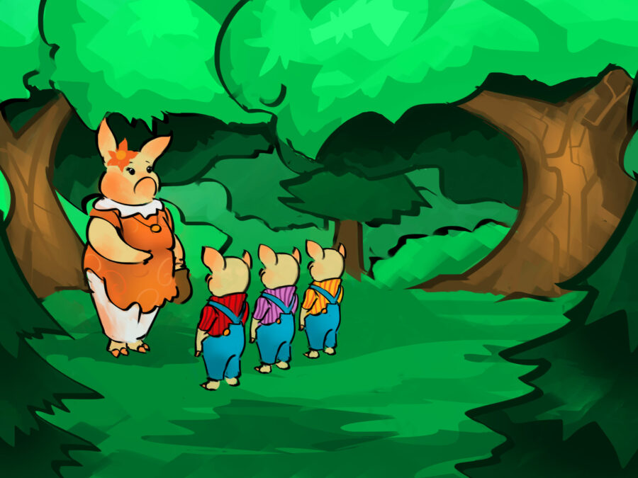
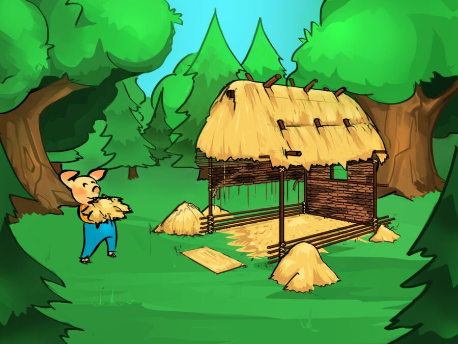
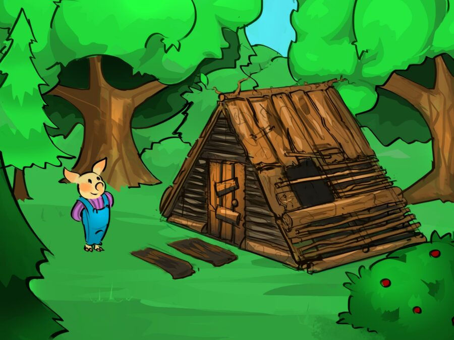
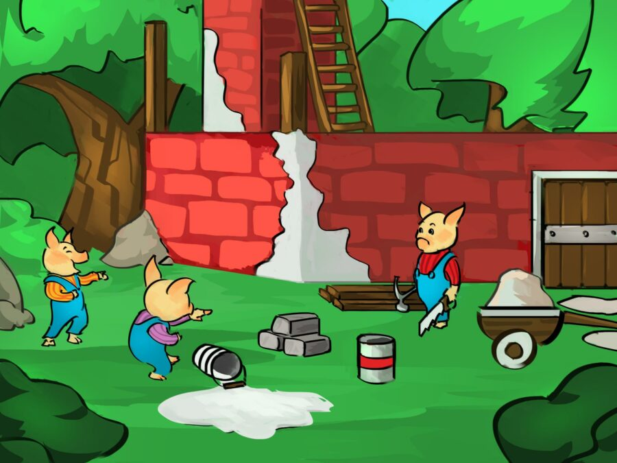
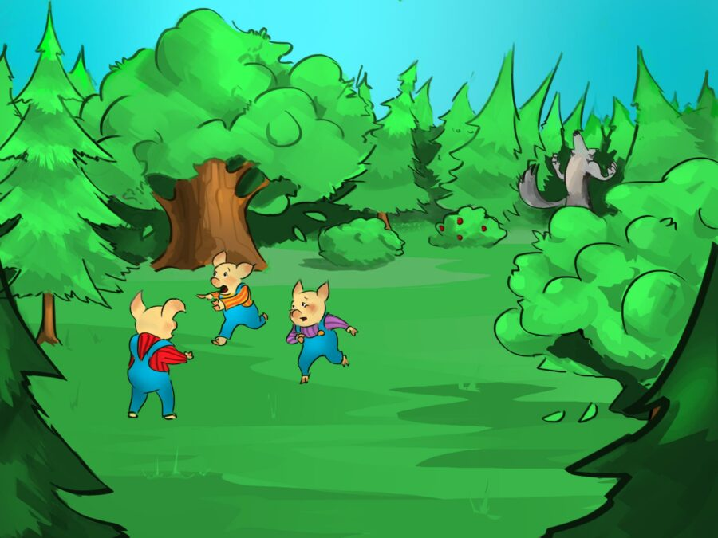
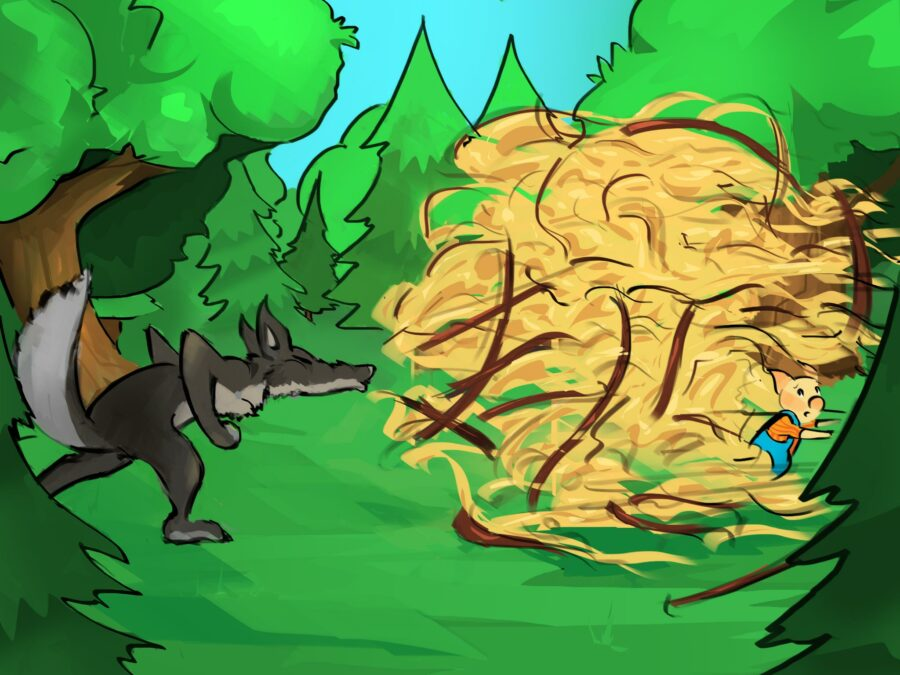
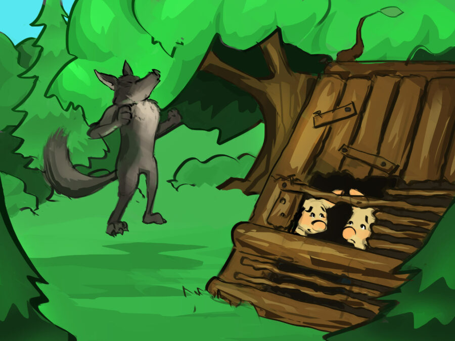
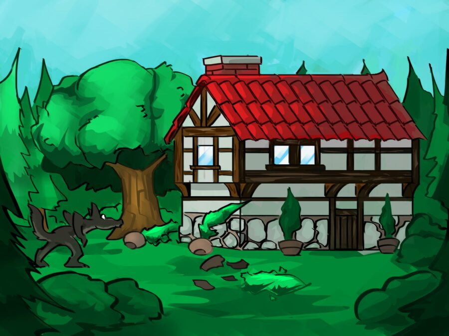
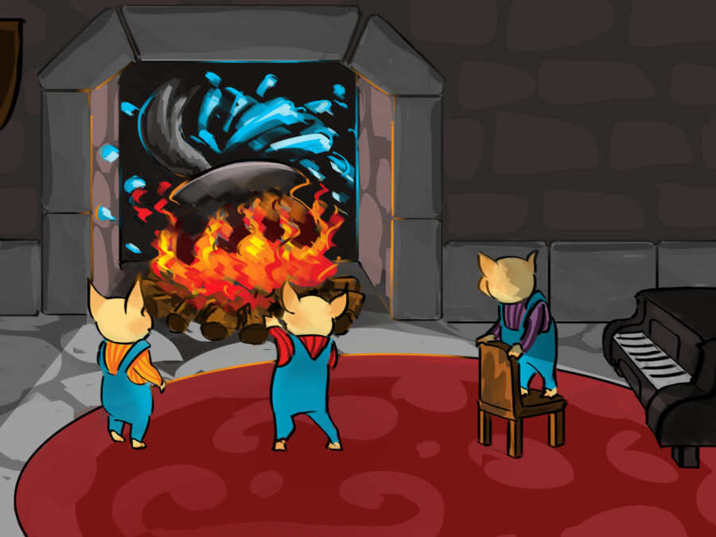
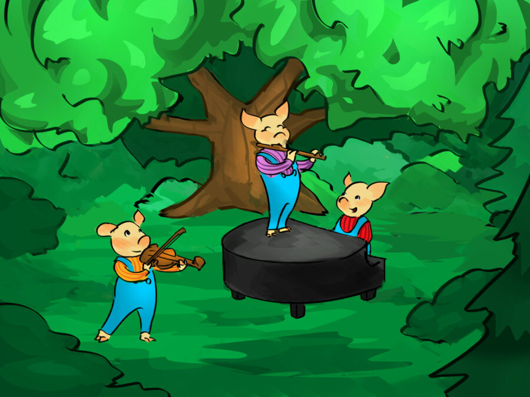

Once upon a time there were three happy little pigs. The first little pig played the flute, the second little pig played the violin and the third little pig played the piano.
One day their mother said, "Dearest sons, you are old enough and big enough to leave home and start your own life. Be wise and take good care of yourselves and of each other." So the three pigs left home and they each decided to build a house.
The first little pig gathered some straw and built his house very quickly. “Now the wolf can’t catch and eat me," he said happily and went back to playing the flute and dancing.
The second little pig made his house of sticks. “Great!” he thought, "Now the wolf can’t eat me either!” His house didn’t take very long to build either and he soon joined his brother playing games and making music.
They were playing and singing, and all the while the third little pig was still building his house of bricks. The other two little pigs laughed at him for working so hard, but he didn't mind. Instead he said, "When the big bad wolf comes, you'll see what happens!"
Some time later, the pigs were working outside, when all of a sudden the big bad wolf came. Each pig went into his house to hide. “Little pig, little pig, let me come in!”, said the wolf to the first little pig. “Not by the hair on my chinny chin chin!”, said the first little pig bravely. “Then I’ll huff and I'll puff, and I’ll blow your house in!”, the wolf said.
He huffed and he puffed and he blew the first little pig's house away. The pig squealed and ran to his brother's house, but the wolf huffed and puffed and blew away the stick house too.
The two little pigs squealed and ran into the brick house their brother had built.
"The wolf huffed and he puffed, and he huffed and he puffed, but even with all that huffing and puffing he couldn't blow the brick house down. But this was a cunning wolf. He had another idea. He decided to break in the house through the chimney! But the clever little pig had already thought of that.
"There was a pot of boiling water simmering away on the fire. The big bad wolf fell into the hot pot and he died.
"The two pigs understood their brother's lesson and decided not to be lazy any more. The very next day they built houses of bricks. Now the first and the second little pigs had all the time in the world to play the flute and the violin and to sing. The third little pig accompanied them on the piano and the three lived happily every after, safe and sound in their little brick houses.
Thank you for reading the story! Hope you understood it.
Let’s Test your Understanding?
Yes
No